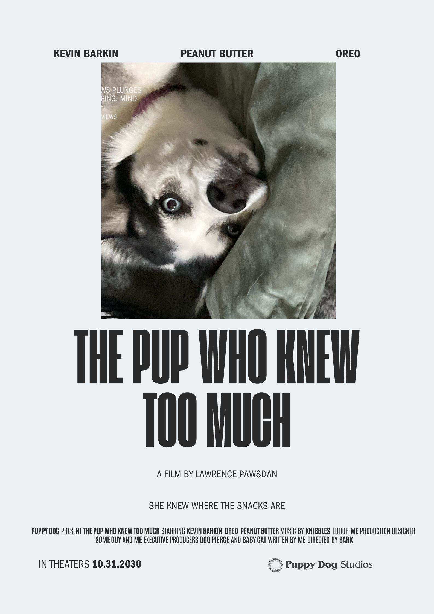
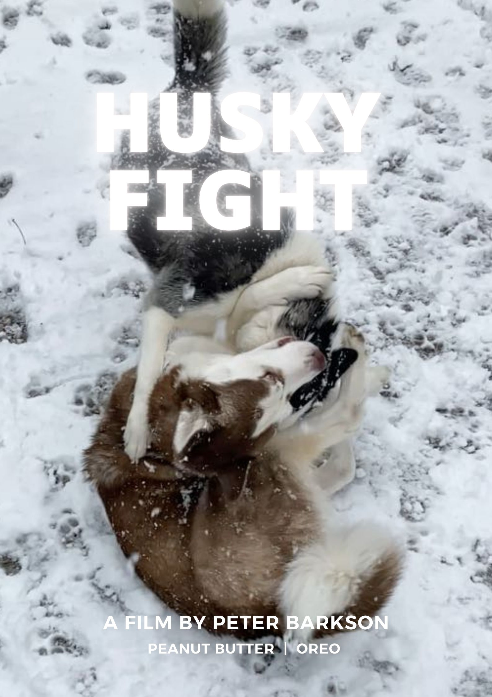
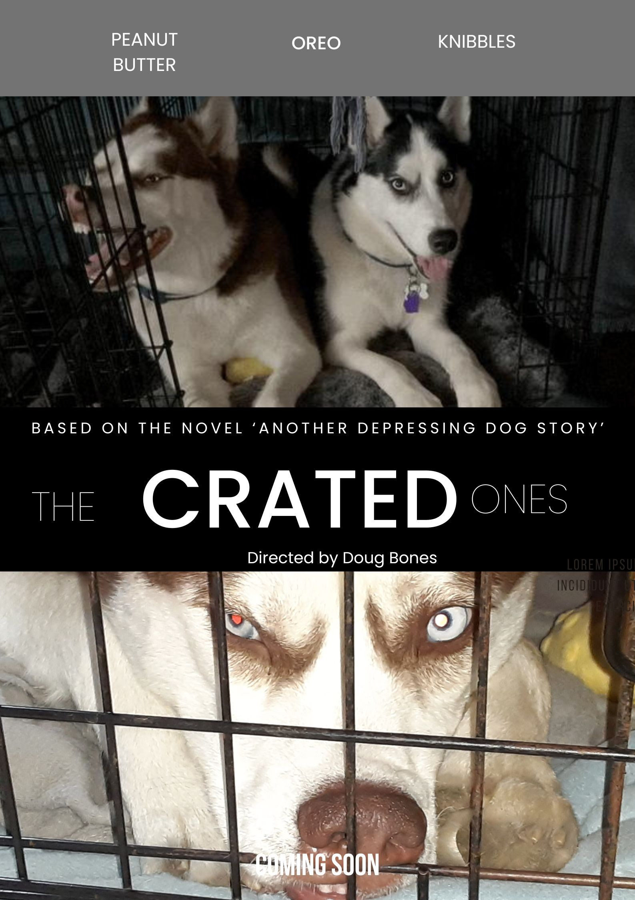
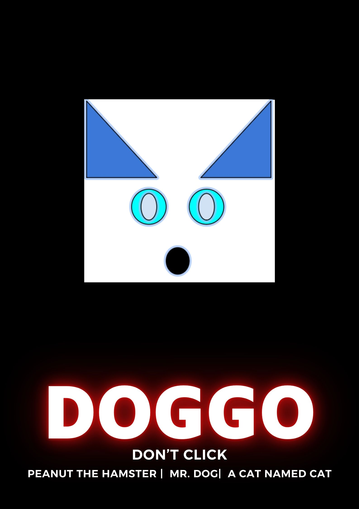

Welcome to Good Boy Casting Home
About Us:
We are a small casting company who casts dogs and occasionally cats for film and TV.
We have worked with several major films including "Paws" and "Bark Club" We are currently casting for the film "The Pup who knew too much".
We are in the process of open casting. To contact us if you think your dog is the next pawstar
or learn more about our current project "The Pup Who Knew Too Much" please click the links in the top right corner.




We are always looking for new talent, well trained dogs are always welcomed. We unfortunately
do not cast small curly haired dogs do to past incidents.
Good Dog Casting and PuppyDogStudios have had a long time relationship. Check out their website
at PuppyDogStudios.com for films we have casted for.